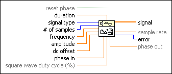
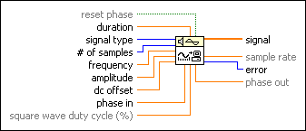

Signal Generator by Duration VI
Owning Palette: Signal Generation VIs
Requires: Full Development System
Generates a signal with a shape given by the signal type.

 Add to the block diagram Add to the block diagram |
 Find on the palette Find on the palette |
Owning Palette: Signal Generation VIs
Requires: Full Development System
Generates a signal with a shape given by the signal type.

| Add to the block diagram |
Find on the palette |
 |
reset phase determines the initial phase of output signal. The default is TRUE. If reset phase is TRUE, the initial phase is set to phase in. If reset phase is FALSE, the initial phase is set to the value of phase out when this VI was last executed. | ||||||||||||||
 |
duration is the time, in seconds, of the duration of the generated output signal. The default is 1.0. | ||||||||||||||
 |
signal type is the type of signal to generate.
|
||||||||||||||
 |
# of samples is the number of samples of the output signal. The default is 100. | ||||||||||||||
|
frequency is the frequency of the output signal in Hz. The default is 10. The unit of frequency is Hz, or cycles/sec, and so represents the number of cycles of one period of the waveform type that is generated in 1 second of the output signal. | ||||||||||||||
|
amplitude is the amplitude of the output signal. The default is 1.0. | ||||||||||||||
|
dc offset is the constant offset, or dc value, of the generated output signal. The default is 0. | ||||||||||||||
|
phase in is the initial phase, in degrees, of output signal when reset phase is TRUE. The default is 0. | ||||||||||||||
|
square wave duty cycle is the percentage of time a square wave remains high versus low over one period. The VI uses this parameter only if the signal type is a square wave. The default is 50. | ||||||||||||||
 |
signal is the generated array of signal samples. | ||||||||||||||
 |
sample rate is the output signal sample rate and is equal to # of samples/duration. | ||||||||||||||
 |
error returns any error or warning from the VI. You can wire error to the Error Cluster From Error Code VI to convert the error code or warning into an error cluster. | ||||||||||||||
|
phase out is the phase, in degrees, of the next sample of output signal. |
The frequency of the signal is given in Hz (cycles/sec) and the duration is given in seconds.
# of samples and duration completely define a sample rate, which must be greater than 2 times the appropriate signal frequency to meet the Nyquist criterion
If the Nyquist criterion is not met, you must adjust # of samples, duration, or frequency in one of the following ways:
The Signal Generator by Duration VI is reentrant, so you can use it to simulate a continuous acquisition from a function generator. If the input control reset phase is FALSE, subsequent calls to the Signal Generator by Duration VI produce an array containing the next n samples of the selected waveform.
When reset phase is FALSE, the Signal Generator by Duration VI uses the phase out value as its new phase in the next time the VI executes.